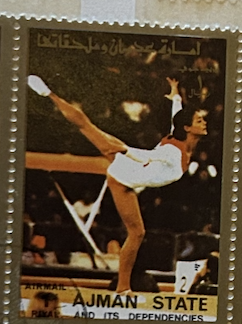
| SOURCE | TITLE| IMAGE MATCH | click to source page |
| Dreamstime.com | Gymnastics, Summer Olympic Games 1960 - Rome, Serie, Circa 1960 Editorial Stock Image - Image of philatelic, post: 223496879 | 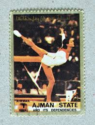 |
| iCollector.com | Autographs, Sports Cards, Art & Collectibles Auction - Session 1 - Page 243 of 282 - Pristine Auction - iCollector.com Online Auctions | 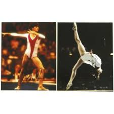 |
| eBay | Gymnastics Fiction & Nonfiction Books for sale | eBay | 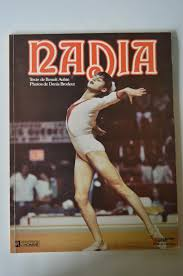 |
| Tripod (Lycos) | Oana Ban | 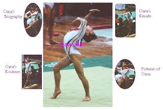 |
| eBay | signed KERRI STRUG 8x10 photo 1996 ATLANTA OLYMPICS GYMNASTICS GOLD picture B | eBay | 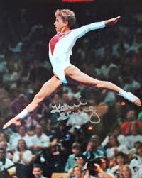 |
| The Movie Database (TMDB) | Nadia (1984) - Posters — The Movie Database (TMDB) | 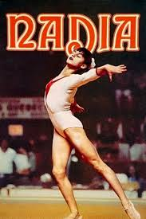 |
| eBay | Olga Korbut | eBay | 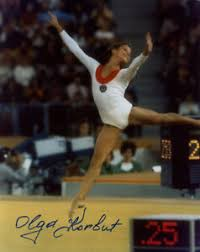 |
| X | Athletic Orthopedics and Knee Center (@AOKmedcenter) / Posts / X | 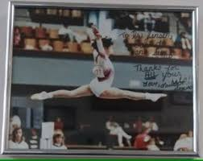 |
| Biblioteca Nacional de Angola | DOMINIQUE MOCEANU | 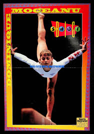 |
| X | Dana Brydlova, Vera Cerna and Eva Mareckova (Czechoslovakia) Brydlova was a great UB worker, Cerna was the 1979 champion and she was also a great FX worker. Mareckova was the best czech | 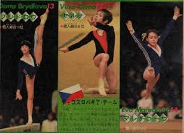 |
| eBay | signed KERRI STRUG 8x10 photo 1996 ATLANTA OLYMPICS GYMNASTICS GOLD picture B | eBay | 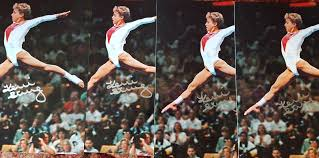 |
| eBay | Olympics 1973 Vintage Sports Publications for sale | eBay | 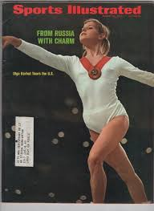 |
| Elena Vyacheslavovna Mukhina in all-around Copenhagen, Europeanchampionship Gymnastic Artístic Woman, 1979 and Strabourg Worldchampionship Gymnastique Artístic Woman, 1978 | 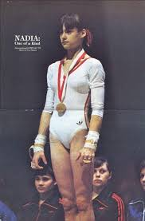 | |
| Bart Conner and Nadia Comaneci | Gallery | Bart Conner and Nadia Comaneci | 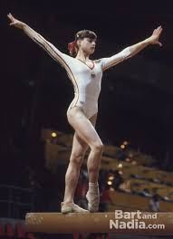 |
| bplaced.net | Index of /AG/Comaneci | 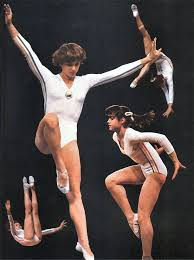 |
| Weebly | Nadia Comăneci - Home | 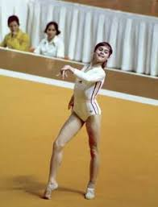 |
| Blogger.com | The King Karl I of Romania Autograph Museum: Nadia Comăneci | 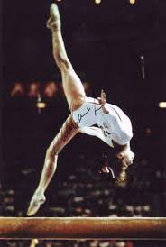 |
| Natalia Yurchenko's 1979 European Championships beam routine | 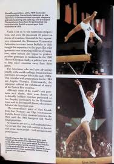 | |
| eBay | Vintage OLGA KORBUT Print Photo Magazine Clipping 1972 OLYMPICS GYMNASTICS | eBay | 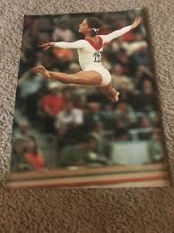 |
| Nadia Comăneci makes history in 1976 by being the first to ever receive perfect 10s, repeatedly, at the Olympics. Then, she did it again in 1980. : r/HistoricalCapsule | 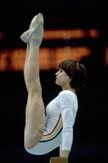 | |
| Tumblr | chalkgrips on Tumblr | 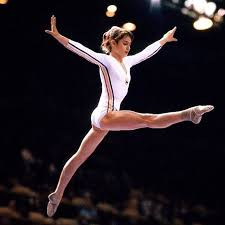 |
| Andrea Thomas** (born 12 September 1968) is a Canadian [gymnast](https://en.wikipedia.org/wiki/Gymnastics). She competed in [six events](https://en.wikipedia.org/wiki/Gymnastics_at_the_1984_Summer_Olympics) at the [1984 Summer Olympics](https://en ... | 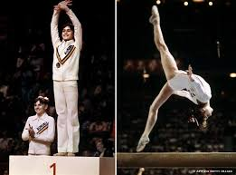 | |
| eBay | Olga Korbut SIGNED 11x14 Photo +1972 Gold Olympic Gymnastics PSA/DNA AUTOGRAPHED | eBay | 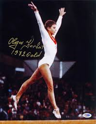 |
| eBay | Nadia Comaneci - Exclusive PHOTO PRINT Ref 299 * | eBay | 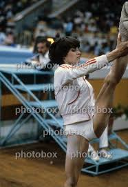 |
| IG Archives: 1979 Spartakiade 1. Natalia Shaposhnikova (URS) 77.425 2. Tatiana Arzhannikova (URS) 76.475 3. Nelli Kim (URS) 76.425 4. Eva Mareckova (CZE) 76.100 5. Vera Cerna (CZE) 75.550 6. Erika Csanyi ( | 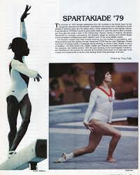 | |
| eBay | 1976 Olympics Original Vintage Sports Programs for sale | eBay | 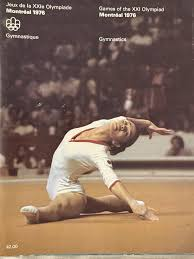 |
| eBay | 1976 USSR Gymnastics Program With Olga Korbut & Nelli Kim Great Photos 16 Pages | eBay | 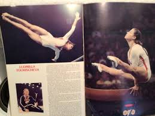 |
| Swiss Figure Skating Champion & spinning sensation Lucinda Ruh was born on this day in 1979. | 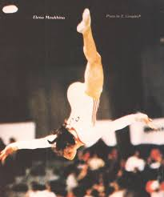 | |
| eBay | Las mejores ofertas en Juegos Olímpicos de 1973 revistas de Deportes Vintage original | eBay | 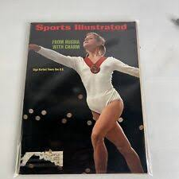 |
| Fandom | Elena Piskun | Gymnastics Wiki | Fandom | 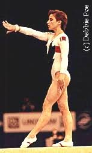 |
| Elena Vyacheslavovna Mukhina - 1960-2006 (@elenavyacheslavovnamukhina) • Facebook | 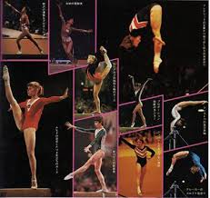 | |
| WordPress.com | On this day: Nadia Comaneci's first “Perfect Ten” | In Times Gone By... | 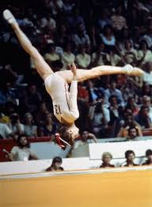 |
| 60 swimmers & volleyball & other athletes ideas to save today | swimmer, athlete, female swimmers and more | 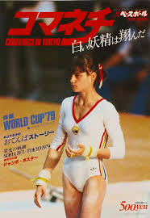 | |
| chris (chrissm0) – Profile | Pinterest | 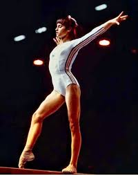 | |
| eBay | Olga Korbut Signed Vintage Sports Illustrated COVER ONLY 3/19/73 SI BECKETT BAS | eBay | 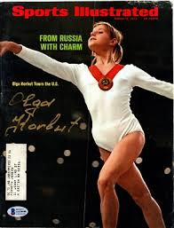 |
| IG Archives: 1979 World Championships - Rodica Dunca and Natalia Tereschenko Purchase back issues of International Gymnast - https://www.gripsetc.com | 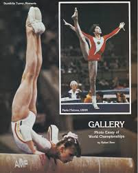 | |
| Psychology Today | Perfection in Question | Psychology Today Canada | 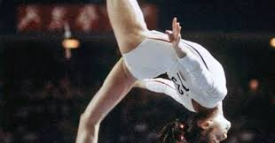 |
| lastdodo.com | Nadia Comaneci [1961] Stamp catalogue - LastDodo | 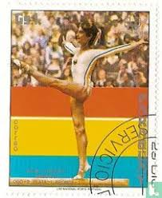 |
| AbeBooks | The Olympic Century XXIII Olympiad Los Angeles 1984 Calgary 1988 [INSCRIBED BY MARY LOU RETTON] by Galford, Ellen: As new. Hardcover (1996) First edition. | ERIC CHAIM KLINE, BOOKSELLER (ABAA ILAB) | 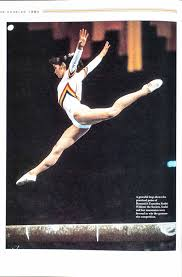 |
| eBay | Gymnastics Gold Olympics Fan Apparel & Souvenirs for sale | eBay | 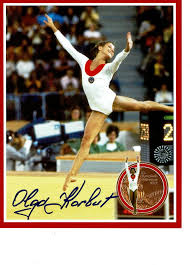 |
| eBay | nadia comaneci routine on the floor exercise in montreal signed 12x8 photo | eBay | 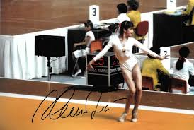 |
| Camelia Voinea | 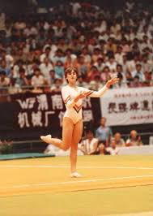 | |
| Autograph Warehouse | Olga Korbut autographed Sports Illustrated Magazine (Gymnastics, Olympics) | 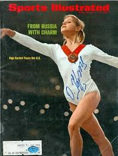 |
| Gumtree Australia | signed olympic framed | Antiques, Art & Collectables | Gumtree Australia Local Classifieds | 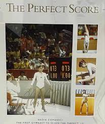 |
| Tumblr | Teodora Ungureanu on the balance beam at the... | 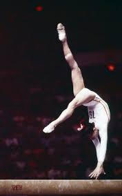 |
| LiveAuctioneers | Olga Korbut Signed 5x4 Colour Photo. Olga Valentinovna Korbut (born 16 May 1955) Is A Former Gymnast | 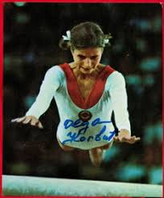 |
| ✨ The Day Perfection Became Human — Montreal 1976 The 1976 Montreal Olympics were meant to heal a wound. Just four years earlier, the world had watched in horror as tragedy struck | 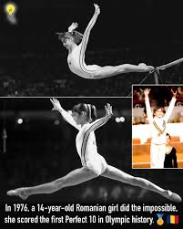 | |
| bplaced.net | Corina Ungureanu - Pictures | 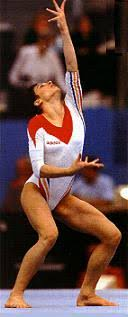 |
| YouTube | #68 Floor music - Ludivine Furnon 1999 - YouTube | 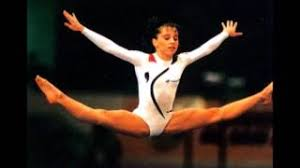 |
| bplaced.net | Nadia Comaneci - Pictures | |
| Happy birthday Elena Shevchenko! 🇷🇺🍰 #artistic #gymnastics Top Russian Gymnastics | ||
| 900+ Gymnastics Then and Now, my favourite Olympic sport ideas | gymnastics, olympic sports, olympics | ||
| Shutterstock | 250 Olga Korbut Stock Pictures, Editorial Images and Stock Photos | Shutterstock Editorial | |
| Olga Korbut | ||
| Elena Vyacheslavovna Mukhina in All-round Copenhagen Denmarck Europeanchampionship Gymnastique Artistic Woman 1979 | ||
| Gymn-Forum | Gymn Forum: Olga Bicherova Biography | |
| eBay | Japanese magazine Nadia Comaneci with poster 1979 baseball | eBay | |
| The EARLY Years: 1979 Olga Bicherova (URS) UB Olga would go on to win the World All-Around title in 1981, just two years later! | ||
| People.com | The Greatest Summer Olympians of All Time |